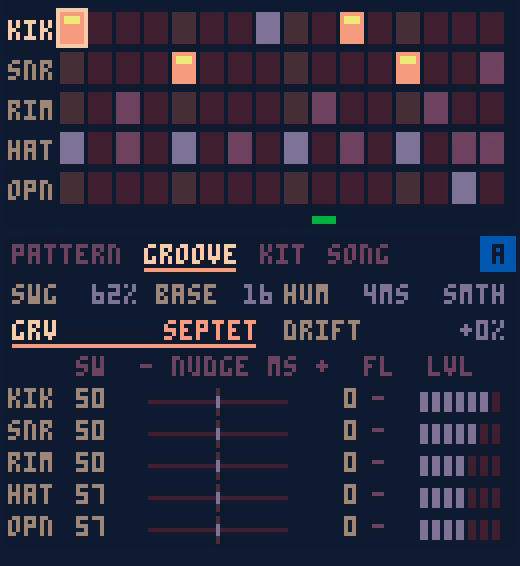

Giordano Malta
I work in data architecture. Outside work I build tools for making music, from electronic instruments to software for small, old machines.
Projects

Four PICO-8 cartridges that turn a handheld game console into a beat-making tool, with swing inspired by J Dilla's timing. Drums, keys and textures record as separate tracks, ready to mix on a computer.
Open source. Published in October 2026.
About
I studied psychology. When I decided to move into tech, I trained specifically in data analysis and engineering. I've also studied philosophy, epistemology, industrial design and systems engineering, plus a lot on my own.
I studied drums for years and I'm now taking music theory and production classes.
I use generative AI and agents in most of what I build. I review what they produce, and the decisions are mine.